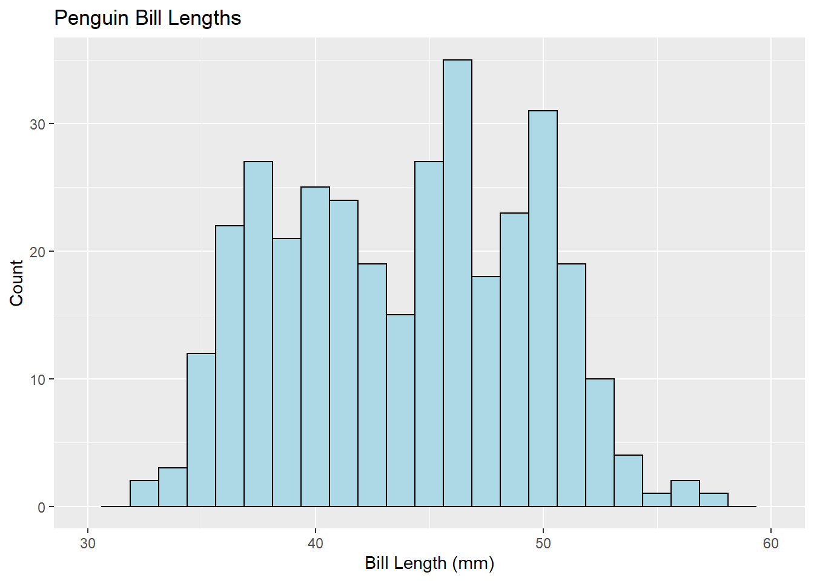
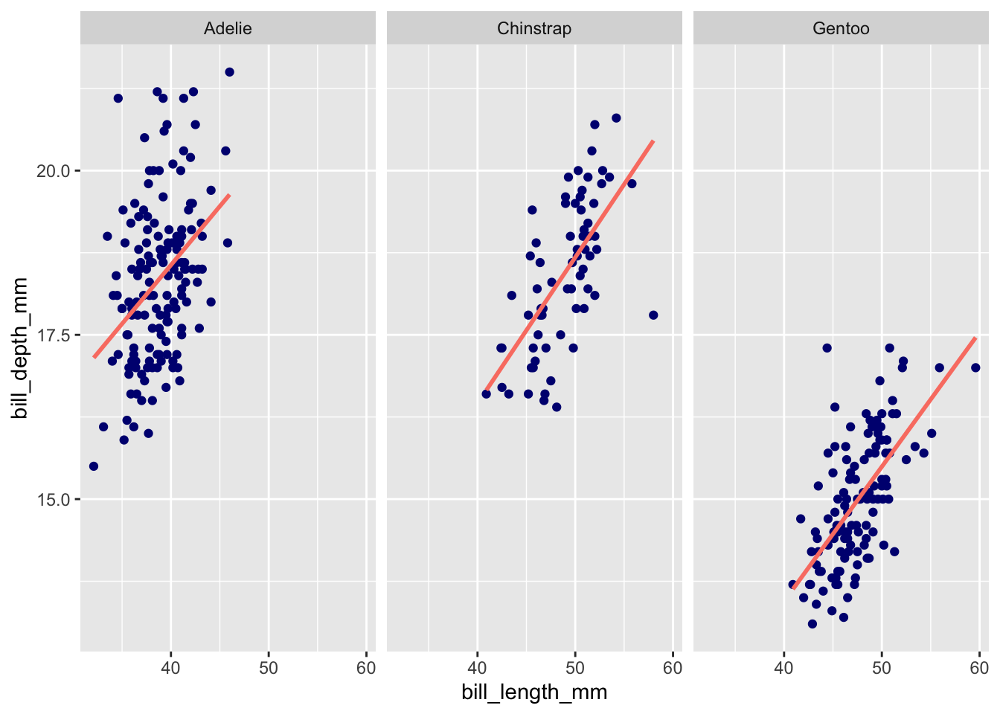
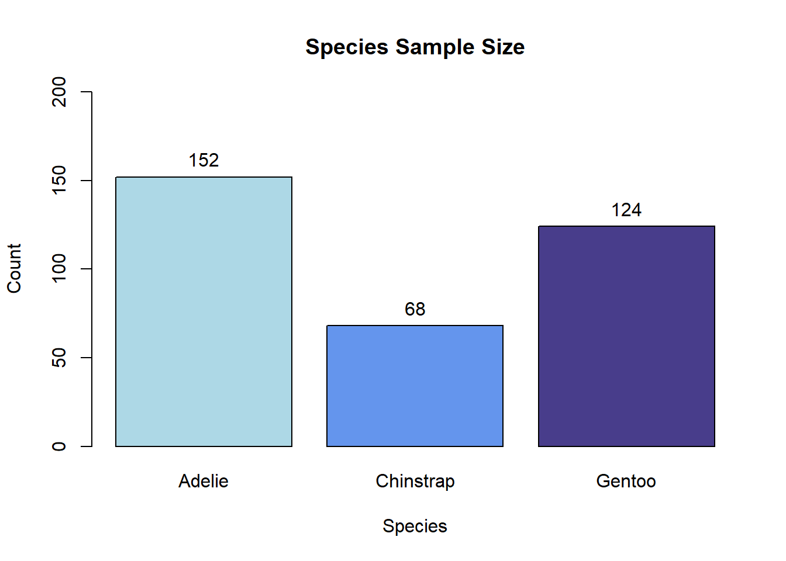
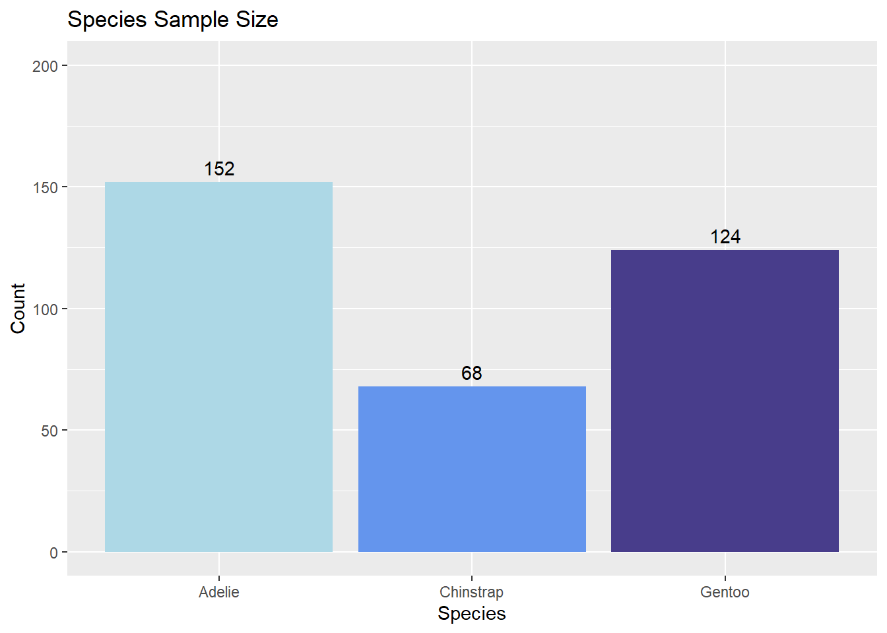
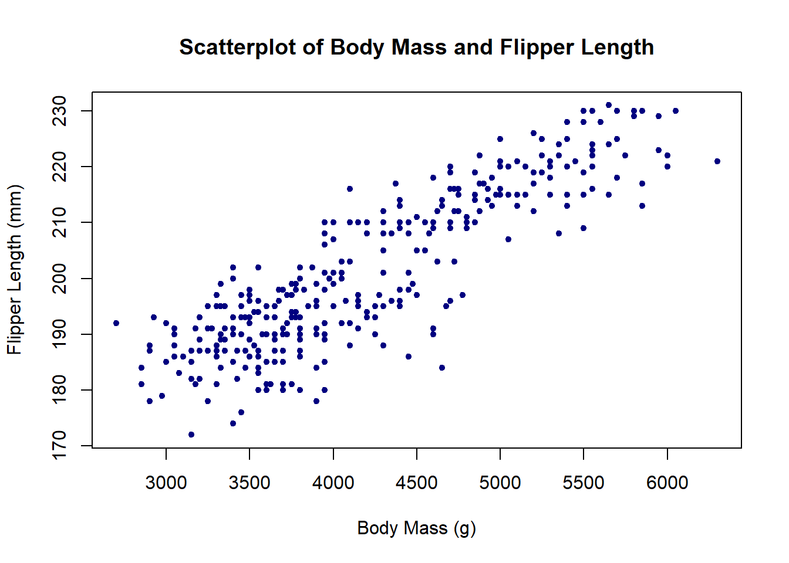
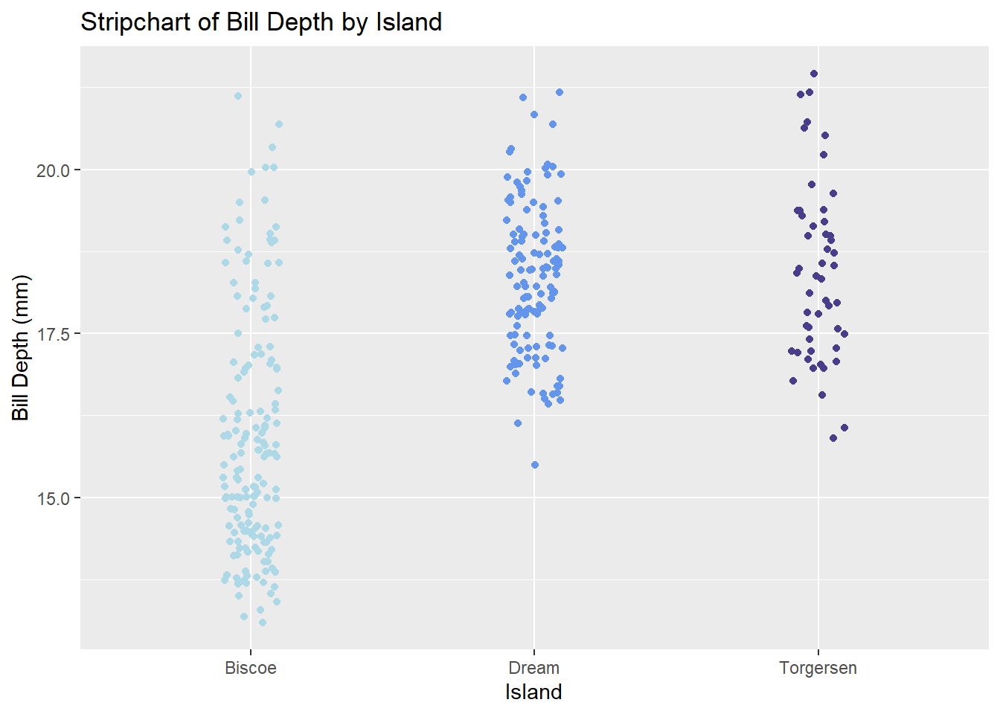
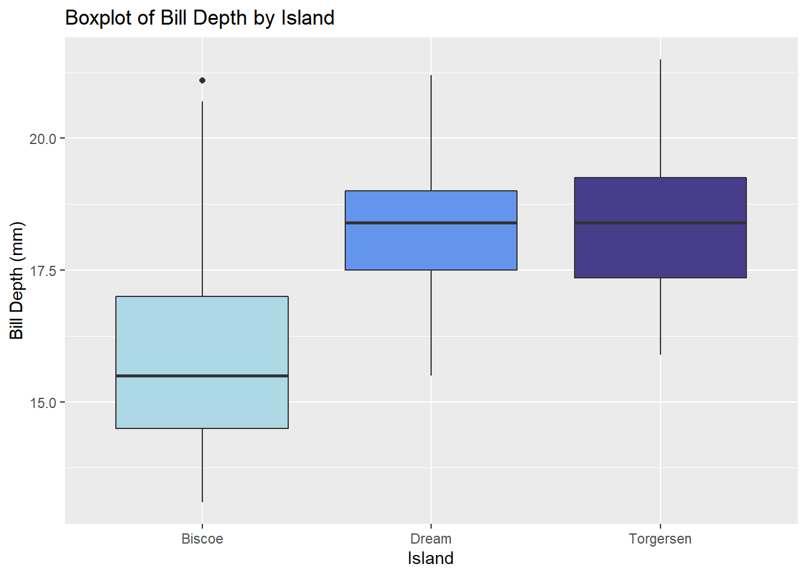
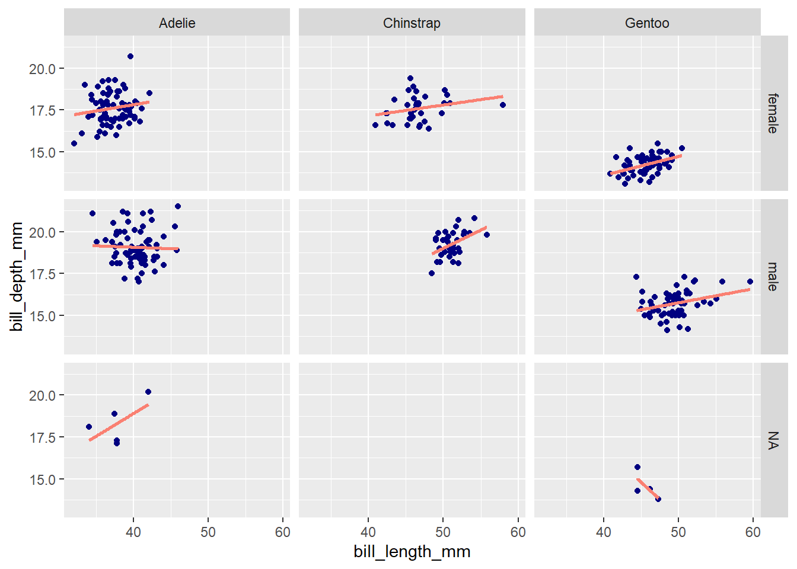

Chapter 7 Basic Plotting and Visualization
This chapter looks at creating basic plots to explore and understand data. Visualization in Python and R is a gigantic and evolving topic. We don’t pretend to present a comprehensive comparison.
The plots below make use of the palmerpenguins data set, which contains various measurements for 344 penguins across three islands in the Antarctic Palmer Archipelago. The data were collected by Kristen Gorman and colleagues, and they were made available under a CC0 public domain license by Allison Horst, Alison Hill, and Kristen Gorman.
For the R sections below, we discuss how to generate plots using base R and using ggplot2.
Here’s a glimpse at the data set:
> head(penguins)
# A tibble: 6 x 8
species island bill_length_mm bill_depth_mm flipper_length_~ body_mass_g sex
<fct> <fct> <dbl> <dbl> <int> <int> <fct>
1 Adelie Torge~ 39.1 18.7 181 3750 male
2 Adelie Torge~ 39.5 17.4 186 3800 fema~
3 Adelie Torge~ 40.3 18 195 3250 fema~
4 Adelie Torge~ NA NA NA NA <NA>
5 Adelie Torge~ 36.7 19.3 193 3450 fema~
6 Adelie Torge~ 39.3 20.6 190 3650 male
# ... with 1 more variable: year <int>7.1 Histograms
Visualizing the distribution of numeric data.
Python
R
Base R’s hist() function generates histograms, and features of the histogram—like the bar color, number of bins/breaks, and so on—can be easily customized as below.
> hist(penguins$bill_length_mm, breaks = 25, col = 'lightblue', xlim = c(30, 60),
+ main = 'Penguin Bill Lengths', xlab = 'Bill Length (mm)', ylab = 'Count')
The ggplot2 method for generating histograms follows the standard ggplot2 syntax: Initialize a plot with ggplot(), and then add layers thereto, specifying aesthetic properties along the way. Here, the layer to add is geom_histogram().
> ggplot(penguins, aes(x = bill_length_mm)) +
+ geom_histogram(fill = 'lightblue', color = 'black', bins = 25) +
+ xlim(30, 60) + labs(title = 'Penguin Bill Lengths', x = 'Bill Length (mm)', y = 'Count')
7.2 Barplots
Visualizing the distribution of categorical data.
Python
R
To form barplots, we’ll first take the penguins data set and create a summary data frame containing the statistics we’re looking to plot. Here, that’s simply the sample size of each species in the data set.
> species_counts <- as.data.frame(xtabs(~ species, data = penguins))
> species_counts
species Freq
1 Adelie 152
2 Chinstrap 68
3 Gentoo 124We can plot those values using the barplot() function in base R, specifying arguments along the way to customize the title/axis labeling, bar colors, and range of the y axis. To add values above the bars, we can follow barplot() with a text() call as below.
> penguin_plot <- barplot(Freq ~ species, data = species_counts, col = c('lightblue', 'cornflowerblue', 'darkslateblue'),
+ main = 'Species Sample Size', xlab = 'Species', ylab = 'Count', ylim = c(0, 200))
> text(x = penguin_plot, y = species_counts$Freq + 10, labels = species_counts$Freq)
To recreate the barplot above with ggplot2, one can add a geom_bar() layer to a plot initialized with ggplot().
> ggplot(species_counts, aes(x = species, y = Freq)) +
+ geom_bar(aes(fill = species), stat = 'identity') +
+ scale_fill_manual(values = c('lightblue', 'cornflowerblue', 'darkslateblue')) + # scale_fill_manual() is used here for bar-color customization
+ labs(title = 'Species Sample Size', x = 'Species', y = 'Count') +
+ theme(legend.position = 'none') + ylim(0, 200) +
+ geom_text(aes(label = Freq, vjust = -0.5)) # geom_text() is used here to add counts above the bars
7.3 Scatterplot
Visualizing the relationship between two numeric variables.
Python
R
Scatterplots can be generated in base R with the plot() function. The pch argument below modifies the point shape (e.g., 20 = solid circle; 24 = unfilled triangle; etc.)
> plot(penguins$body_mass_g, penguins$flipper_length_mm, col = 'navy', pch = 20,
+ main = 'Scatterplot of Body Mass and Flipper Length', xlab = 'Body Mass (g)', ylab = 'Flipper Length (mm)')
To generate a scatterplot with ggplot2, initialize a plot with ggplot(), then add a layer of points with geom_point().
> ggplot(penguins, aes(x = body_mass_g, y = flipper_length_mm)) +
+ geom_point(color = 'navy') +
+ labs(title = 'Scatterplot of Body Mass and Flipper Length', x = 'Body Mass (g)', y = 'Flipper Length (mm)')
7.4 Stripcharts
Visualizing the relationship between a numeric variable and a categorical variable.
Python
R
7.5 Boxplots
Visualizing the relationship between a numeric variable and a categorical variable via five-number summaries.
Python
R
The boxplot() function in base R generates boxplots, and a user specifies the grouping variable and the numeric variable to be plotted in formula notation: y ~ grouping_var.
> boxplot(bill_depth_mm ~ island, data = penguins, col = c('lightblue', 'cornflowerblue', 'darkslateblue'),
+ main = 'Boxplot of Bill Depth by Island', xlab = 'Island', ylab = 'Bill Depth (mm)')
To generate a boxplot with ggplot2, add a geom_boxplot() layer to a plot initialized with ggplot().
> ggplot(penguins, aes(x = island, y = bill_depth_mm)) +
+ geom_boxplot(aes(fill = island), color = 'navy') +
+ scale_fill_manual(values = c('lightblue', 'cornflowerblue', 'darkslateblue')) + # scale_fill_manual() is used to manually specify group colors
+ labs(title = 'Boxplot of Bill Depth by Island', x = 'Island', y = 'Bill Depth (mm)') +
+ theme(legend.position = 'none')7.6 Facet plots
Facet plots (also called trellis plots, lattice plots, and conditional plots) are comprised of multiple smaller plots, where each subplot contains a subset of the overall data, with subsets defined by one or more faceting variable.
Python
R
ggplot2 provides a intuitive and easy-to-use method for generating facet plots: A user specifies the aesthetics of the plot using standard ggplot2 syntax (i.e., as a series of added layers) and then adds an additional call, facet_wrap() (or facet_grid(); differences are discussed below), specifying the faceting variable(s) to split up the plots by.
> ggplot(penguins, aes(x = bill_length_mm, y = bill_depth_mm)) +
+ geom_point(color = 'navy') +
+ geom_smooth(method = 'lm', se = F, color = 'salmon') + # Add basic least-squares line
+ facet_wrap(~species) # Use formula notation, a character vector, or vars() to specify faceting variables; e.g., ~species, c('species'), or vars(species)
`geom_smooth()` using formula 'y ~ x'
The number of rows and columns can be manually specified with nrow and ncol arguments in facet_wrap(). By default, the x and y axes of all facet plots will be on the same scale. The axis ranges can be set to vary freely by adding scales = 'free' as an argument (or, alternatively, 'free_x' or 'free_y' to free just the x or y axes.)
Both facet_wrap() and facet_grid() can be used for faceting. When faceting based on multiple variables (e.g., species and sex), facet_wrap() will drop group combinations for which there are no data points, whereas facet_grid() will generate a plot for all possible group combinations:
> ggplot(penguins, aes(x = bill_length_mm, y = bill_depth_mm)) +
+ geom_point(color = 'navy') +
+ geom_smooth(method = 'lm', se = F, color = 'salmon') +
+ facet_wrap(vars(species, sex))
`geom_smooth()` using formula 'y ~ x'
> ggplot(penguins, aes(x = bill_length_mm, y = bill_depth_mm)) +
+ geom_point(color = 'navy') +
+ geom_smooth(method = 'lm', se = F, color = 'salmon') +
+ facet_grid(rows = vars(sex), cols = vars(species)) # Note that facet_grid() has separate `rows` and `cols` arguments for specifying faceting variables
`geom_smooth()` using formula 'y ~ x'